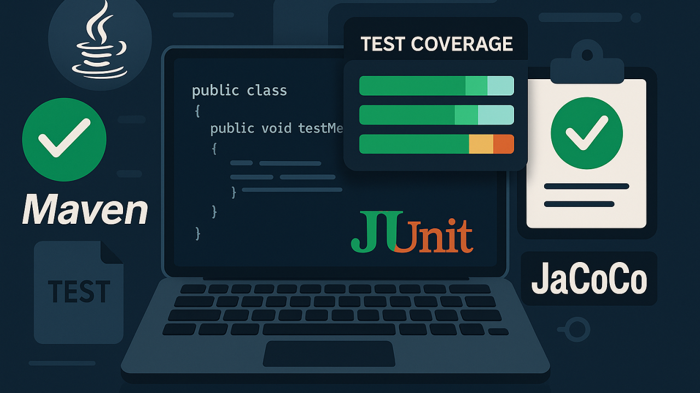
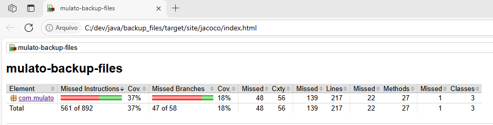

Implementando Testes Unitários Em Um Projeto Java Com Maven

Implementando Testes Unitários com JaCoCo
Implementando Testes Unitários em um Projeto Java com Maven
Este artigo aborda a implementação de testes unitários em um projeto Java utilizando Maven, com foco na classe FileBackup e na geração de relatórios de cobertura de código com JaCoCo. Vamos explorar como estruturar o projeto, escrever testes eficazes e garantir a qualidade do código.
Por que Escrever Testes Unitários?
Testes unitários garantem que cada parte do seu código funciona como esperado, facilitando a manutenção, refatoração e evolução do projeto. Eles ajudam a identificar rapidamente bugs e reduzem o custo de correção de erros.
Estrutura de Pastas Padrão
Para projetos Java seguindo o padrão Maven, a estrutura recomendada é:
project-root/
│
├── src/
│ ├── main/
│ │ └── java/
│ │ └── com/
│ │ └── mulato/
│ │ └── FileBackup.java
│ └── test/
│ └── java/
│ └── com/
│ └── mulato/
│ └── FileBackupTest.java
Boas Práticas para Testes Unitários
-
Nomeie os métodos de teste de forma clara: O nome deve indicar o que está sendo testado e o resultado esperado.
-
Teste apenas uma lógica por método: Cada teste deve validar um único comportamento.
-
Evite dependências externas: Use mocks para simular recursos externos (banco de dados, arquivos, etc).
-
Garanta independência dos testes: Os testes devem poder ser executados em qualquer ordem.
-
Mantenha os testes rápidos: Testes lentos dificultam a integração contínua.
Configurando Dependências no Maven
No arquivo pom.xml, adicione as dependências do JUnit 5 para testes e do JaCoCo para cobertura de código:
\<dependency>
\<groupId>org.junit.jupiter\</groupId>
\<artifactId>junit-jupiter\</artifactId>
\<version>5.10.2\</version>
\<scope>test\</scope>
\</dependency>
E o plugin do JaCoCo dentro da seção \<build>:
\<plugin>
\<groupId>org.jacoco\</groupId>
\<artifactId>jacoco-maven-plugin\</artifactId>
\<version>0.8.11\</version>
\<executions>
\<execution>
\<goals>
\<goal>prepare-agent\</goal>
\</goals>
\</execution>
\<execution>
\<id>report\</id>
\<phase>test\</phase>
\<goals>
\<goal>report\</goal>
\</goals>
\</execution>
\</executions>
\</plugin>
Tornando Métodos Testáveis
Para que os métodos possam ser testados, eles não devem ser private. Altere para static (sem modificador) ou public:
// Antes
private static void copyDirectory(...);
private static int countFiles(...);
// Depois
static void copyDirectory(...);
static int countFiles(...);
Exemplos de Asserts no JUnit
Além do assertEquals e assertTrue, o JUnit oferece outros métodos úteis:
assertFalse(condition);
assertNull(object);
assertNotNull(object);
assertThrows(Exception.class, () -> { /* código */ });
Utilizando Mocks em Testes
Para testar métodos que dependem de recursos externos, utilize bibliotecas como Mockito:
\<dependency>
\<groupId>org.mockito\</groupId>
\<artifactId>mockito-core\</artifactId>
\<version>5.2.0\</version>
\<scope>test\</scope>
\</dependency>
Exemplo de uso:
import static org.mockito.Mockito.*;
MyService service = mock(MyService.class);
when(service.doSomething()).thenReturn(\"resultado\");
Integração Contínua e Testes Automatizados
Configure pipelines de CI (como GitHub Actions, GitLab CI, Jenkins) para rodar os testes automaticamente a cada push. Isso garante que novas alterações não quebrem funcionalidades existentes.
Exemplo de pipeline com GitHub Actions
name: Java CI
on: [push, pull_request]
jobs:
build:
runs-on: ubuntu-latest
steps:
- uses: actions/checkout@v4
- name: Set up JDK 21
uses: actions/setup-java@v4
with:
distribution: \'temurin\'
java-version: \'21\'
- name: Build with Maven
run: mvn clean test
Testes Parametrizados com JUnit 5
import org.junit.jupiter.params.ParameterizedTest;
import org.junit.jupiter.params.provider.ValueSource;
\@ParameterizedTest
\@ValueSource(strings = {\"file1.txt\", \"file2.txt\"})
void testFileNames(String fileName) {
assertTrue(fileName.startsWith(\"file\"));
}
Exemplo de Classe de Teste Unitário
package com.mulato;
import org.junit.jupiter.api.Test;
import java.io.*;
import java.util.concurrent.atomic.AtomicInteger;
import static org.junit.jupiter.api.Assertions.*;
class FileBackupTest {
\@Test
void testCountFilesEmptyFolder() throws IOException {
File tempDir = new File(\"testDirEmpty\");
tempDir.mkdir();
try {
int count = FileBackup.countFiles(tempDir);
assertEquals(0, count);
} finally {
tempDir.delete();
}
}
\@Test
void testCopyDirectory() throws IOException {
File sourceDir = new File(\"sourceDir\");
File destDir = new File(\"destDir\");
sourceDir.mkdir();
destDir.mkdir();
File file = new File(sourceDir, \"file.txt\");
try (FileWriter fw = new FileWriter(file)) {
fw.write(\"test\");
}
AtomicInteger filesProcessed = new AtomicInteger(0);
try {
FileBackup.copyDirectory(sourceDir, destDir, filesProcessed);
File copiedFile = new File(destDir, \"file.txt\");
assertTrue(copiedFile.exists());
assertEquals(1, filesProcessed.get());
} finally {
file.delete();
sourceDir.delete();
for (File f : destDir.listFiles()) f.delete();
destDir.delete();
}
}
}
Testando o Método Main
Para garantir que o método main executa sem lançar exceções:
package com.mulato;
import org.junit.jupiter.api.Test;
import static org.junit.jupiter.api.Assertions.assertDoesNotThrow;
public class MainTest {
\@Test
void testMainRunsWithoutException() {
assertDoesNotThrow(() -> Main.main(new String[]{}));
}
}
Gerando Relatórios de Cobertura com JaCoCo
Após configurar o plugin, execute:
mvn clean test
O relatório será gerado em: target/site/jacoco/index.html
Abra esse arquivo no navegador para visualizar a cobertura dos testes.

Exemplo de relatório JaCoCo
Recursos e Leituras Complementares
Resumo:
-
Estruture seu projeto conforme o padrão Maven.
-
Adicione JUnit e JaCoCo ao pom.xml.
-
Torne métodos utilitários testáveis (não privados).
-
Escreva testes unitários para métodos de lógica.
-
Gere e consulte o relatório de cobertura com JaCoCo.
-
Considere automatizar seus testes com pipelines de CI modernos.
-
Compartilhe suas experiências e dúvidas nos comentários!
Adendo: Hospedando o Código no GitHub e Publicando em Ambiente Produtivo
Além de implementar e testar seu projeto localmente, você pode hospedar o código no GitHub e publicar em ambientes produtivos. Veja como:
1. Hospedando no GitHub
-
Crie um repositório no GitHub.
-
Faça o commit do seu projeto local e envie para o repositório remoto:
git init
git add .
git commit -m \"Primeiro commit\"
git remote add origin https://github.com/SEU_USUARIO/NOME_DO_REPOSITORIO.git
git push -u origin main
2. Publicando em Ambiente Produtivo
O método de publicação depende do tipo de aplicação:
-
Aplicação Desktop Java
-
Gere um JAR executável com Maven:
mvn clean package
-
Transfira o arquivo .jar para o servidor ou máquina onde será executado.
-
Execute com:
java -jar nome-do-arquivo.jar
-
Aplicação Web Java
-
Gere um arquivo .war ou .jar e faça o deploy em um servidor de aplicação (Tomcat, WildFly, etc.) ou em serviços de nuvem (Azure, AWS, Heroku, etc.).
-
Automação com CI/CD
-
Use GitHub Actions para automatizar testes, builds e até deploys para ambientes de produção.
Resumo:
-
GitHub serve para versionamento, colaboração e integração contínua.
-
O deploy em produção depende do tipo de aplicação e do ambiente escolhido.
-
Você pode automatizar o processo de build e deploy usando pipelines de CI/CD.
Se quiser um exemplo de workflow de deploy ou dicas para um ambiente específico, deixe sua dúvida nos comentários!
Código-fonte no GitHub: chmulato/backup_files